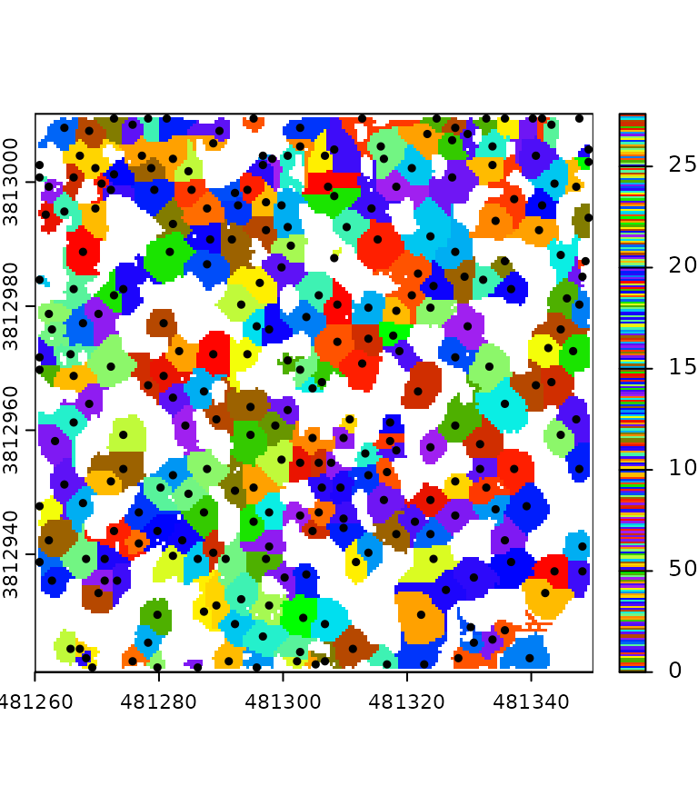
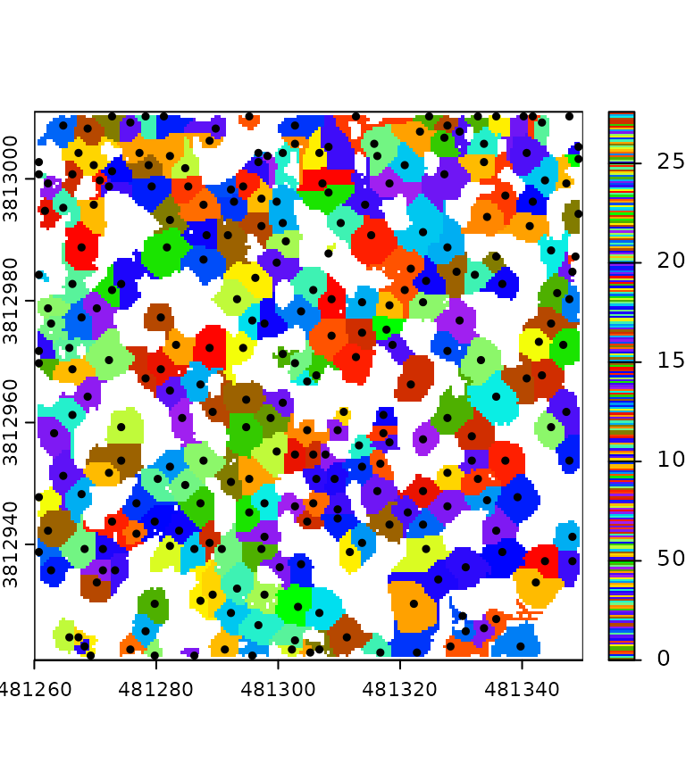

This tutorial is intended to be read in order. It introduces the available tools of the package in a specific order so that the reader can discover all the features of the package organically.
In the following tutorial, the variable f refers to one or
several file paths stored in a vector. It can also be the path to a
directory or the path of a virtual
point cloud. In this tutorial, the output is rendered with one or
two small LAS files, but every pipeline is designed to process numerous
files covering a large extent.
Overall functionality
In lasR, the R functions provided to the user are not
designed to process the data directly; instead, they are used to create
a pipeline. A pipeline consists of stages that are applied to a point
cloud in order. Each stage can either transform the point cloud within
the pipeline without generating any output or process the point cloud to
produce an output.
In the figure below, there are 4 LAS/LAZ files and a pipeline that (1) reads a file, (2) builds and writes a DTM on disk, (3) transforms the point cloud by normalizing the elevation, (4) builds a canopy height model using the transformed point cloud, and (5) transforms the point cloud by removing points below 5 m. The resulting version of the point cloud (points above 5m) is discarded and lost because there is no additional stage in this pipeline. However, other stages can be added, such as the application of a predictive model for points above 5 m or a stage that writes the point cloud to disk.
Once the first file completes the entire pipeline, the second file is used, and the pipeline is applied to fill in the missing parts of the geospatial rasters or vectors produced by the pipeline. Each file is loaded with a buffer from neighboring files if needed.
A pipeline created from the R interface does nothing initially. After
building the pipeline, users must call the exec() function
on it to initiate the computation.

Reader
The reader_las() stage MUST be the first stage of any
pipeline (blue in the figure above). This stage reads the point cloud if
necessary. When creating a pipeline with only this stage, the header of
the files are read, but no computation is actually applied. The points
are thus not even read because there is no other stage in the pipeline
that require to read the points. No result is returned.
pipeline = reader_las()
exec(pipeline, on = f)
#> NULLIn practice when using read_las() without argument it
can be omitted, the function exec adds it on-the-fly.
Triangulate
The first stage we can try is triangulate(). This
algorithm performs a Delaunay triangulation on the points of interest.
Triangulating points is a very useful task that is employed in numerous
processing tasks. Triangulating all points is not very interesting, so
we usually want to use the filter argument to triangulate
only specific points of interest.
In the following example, we triangulate the points classified as 2 (i.e., ground). This produces a meshed Digital Terrain Model.
In this example, the files are read sequentially, with points loaded
one by one and stored to build a Delaunay triangulation. In
lasR, only one file is stored in memory at a time. The
program stores the point cloud and the Delaunay triangulation for the
current processing file. Then the data are discarded to load a new
file.
If the users do not provide a path to an output file to store the result, the result is lost. In the following pipeline, we are building a triangulation of the ground points, but we get no output because everything is lost.
pipeline = reader_las() + triangulate(filter = keep_ground())
ans = exec(pipeline, on = f)
ans
#> NULLIn the following pipeline the triangulation is stored in a geopackage
file by providing an argument ofile:
pipeline = reader_las() + triangulate(filter = keep_ground(), ofile = tempgpkg())
ans = exec(pipeline, on = f)
ans
#> Simple feature collection with 1 feature and 0 fields
#> Geometry type: MULTIPOLYGON
#> Dimension: XYZ
#> Bounding box: xmin: 273357.2 ymin: 5274357 xmax: 273642.9 ymax: 5274643
#> z_range: zmin: 788.9932 zmax: 814.8322
#> Projected CRS: NAD83(CSRS) / MTM zone 7
#> # A tibble: 1 × 1
#> geom
#> <MULTIPOLYGON [m]>
#> 1 Z (((273500.4 5274501 808.4787, 273501.2 5274502 808.1748, 273500.4 5274502 8…
par(mar = c(2, 2, 1, 1))
plot(ans, axes = T, lwd = 0.5)
We can also triangulate the first returns. This produce a meshed Digital Surface Model.
read = reader_las()
del = triangulate(filter = keep_first(), ofile = tempgpkg())
ans = exec(read+del, on = f)We can also perform both triangulations in the same pipeline. The
idea of lasR is to execute all the tasks in one pass using
a pipeline:
read = reader_las()
del1 = triangulate(filter = keep_ground(), ofile = tempfile(fileext = ".gpkg"))
del2 = triangulate(filter = keep_first(), ofile = tempfile(fileext = ".gpkg"))
pipeline = read + del1 + del2
ans = exec(pipeline, on = f)Using triangulate() without any other stage in the
pipeline is usually not very useful. Typically,
triangulate() is employed without the ofile
argument as an intermediate step. For instance, it can be used with
rasterize().
Rasterize
rasterize() does exactly what users may expect from it
and even more. There are three variations:
- Rasterize a Delaunay triangulation.
- Rasterize with predefined operators. The operators are optimized internally, making the operations as fast as possible.
- Rasterize by injecting a user-defined R expression. This is
equivalent to
pixel_metrics()from the packagelidR. Any user-defined function can be mapped, making it extremely versatile but slower.
With these variations, users can build a CHM, a DTM, a predictive model, or anything else.
Rasterize - triangulation
Let’s build a DTM using a triangulation of the ground points and the
rasterize() stage. In the following pipeline, the LAS files
are read, points are loaded for each LAS file with a
buffer, a Delaunay triangulation of the ground points is built,
and then the triangulation is interpolated and rasterized. By default,
rasterize() writes the raster in a temporary file, so the
result is not discarded.
# omitting reader_las() for the example
del = triangulate(filter = keep_ground())
dtm = rasterize(1, del)
pipeline = del + dtm
ans = exec(pipeline, on = f)
ans
#> class : SpatRaster
#> dimensions : 286, 286, 1 (nrow, ncol, nlyr)
#> resolution : 1, 1 (x, y)
#> extent : 273357, 273643, 5274357, 5274643 (xmin, xmax, ymin, ymax)
#> coord. ref. : NAD83(CSRS) / MTM zone 7 (EPSG:2949)
#> source : file22622d2cfed6.tif
#> name : file22622d2cfed6Here, exec() returns a only one SpatRaster
because triangulate() returns nothing (NULL).
Therefore, the pipeline contains two stages, but only one returns
something.
terra::plot(ans, col = gray.colors(25,0,1), mar = c(1, 1, 1, 3))Notice that, contrary to the lidR package, there is
usually no high-level function with names like
rasterize_terrain(). Instead, lasR is made up
of low-level functions that are more versatile but also more challenging
to use.
Rasterize - internal metrics
Internal metrics are strings with a format
attribute_function. attribute is an attribute
of the point cloud such as z, classification,
or intensity. function is an available metrics
function such as mean, max, or
sd. The following are exemples of valid metric strings:
z_max, i_mean, intensity_mean,
classification_mode, z_sd. Readers can refer
to the official documentation to discover all the possible
combinations.
Let’s build two CHMs: one based on the highest point per pixel with a resolution of 2 meters, and the second based on the triangulation of the first returns with a resolution of 50 cm.
In the following pipeline, we are using two variations of
rasterize(): one capable of rasterizing a triangulation and
the other capable of rasterizing the point cloud with a predefined
operator (here max is interpreted as z_max in
absence of explicit attribute). The output is a named list
with two SpatRaster.
del <- triangulate(filter = keep_first())
chm1 <- rasterize(2, "max")
chm2 <- rasterize(0.5, del)
pipeline <- del + chm1 + chm2
ans <- exec(pipeline, on = f)
terra::plot(ans[[1]], mar = c(1, 1, 1, 3), col = col)
terra::plot(ans[[2]], mar = c(1, 1, 1, 3), col = col)

For simplicity the package has pre-installed pipelines namedchm()anddtm()that do what is explained above.
Rasterize - R expression
This special case is covered in a special tutorial about R-based stages
Rasterize - buffered
The lasR package introduced the concept of a buffered
area-based approach to enhance the resolution of prediction maps.
However, this concept is not covered in detail in this tutorial. For
further information, readers can refer to the dedicated article
Transform with
Another way to use a Delaunay triangulation is to transform the point
cloud. Users can add or subtract the triangulation from the point cloud,
effectively normalizing it. Unlike the lidR package, there
is no high-level function with names like
normalize_points(). Instead, lasR is composed
of low-level functions that offer more versatility.
Let’s normalize the point cloud using a triangulation of the ground points (meshed DTM).
In the following example, the triangulation is used by
transform_with() that modifies the point cloud in the
pipeline. Both triangulate() and
transform_with() return nothing. The output is
NULL.
del = triangulate(filter = keep_ground())
norm = transform_with(del, "-")
pipeline = del + norm
ans = exec(pipeline, on = f)
ans
#> NULL
For convenience this pipeline is pre-recorded in the package under the
name normalize().
transform_with() can also transform with a raster. This is
not presented in this tutorial.
To obtain a meaningful output, it is necessary to chain another
stage. Here the point cloud has been modified but then, it is discarded
because we did nothing with it. For instance, we can compute a Canopy
Height Model (CHM) on the normalized point cloud. In the following
pipeline, the first rasterization (chm1) is applied before
normalization, while the second rasterization occurs after
transform_with(), thus being applied to the transformed
point cloud.
del = triangulate(filter = keep_ground())
norm = transform_with(del, "-")
chm1 = rasterize(2, "max")
chm2 = rasterize(2, "max")
pipeline = chm1 + del + norm + chm2
ans = exec(pipeline, on = f)
col = grDevices::colorRampPalette(c("blue", "cyan2", "yellow", "red"))(15)
terra::plot(c(ans[[1]], ans[[2]]), col = col)
After performing normalization, users may want to write the
normalized point cloud to disk for later use. In this case, you can
append the write_las() stage to the pipeline.
Write LAS
write_las() can be called at any point in the pipeline.
It writes one file per input file, using the name of the input files
with added prefixes and suffixes. In the following pipeline, we read the
files, write only the ground points to files named after the original
files with the suffix _ground, perform a triangulation on
the entire point cloud, followed by normalization. Finally, we write the
normalized point cloud with the suffix _normalized.
write1 = write_las(paste0(tempdir(), "/*_ground.laz"), filter = keep_ground())
write2 = write_las(paste0(tempdir(), "/*_normalized.laz"), )
del = triangulate(filter = keep_ground())
norm = transform_with(del, "-")
pipeline = write1 + del + norm + write2
ans = exec(pipeline, on = f)
ans
#> - write_las : /tmp/Rtmp0lEBNj/bcts_1_ground.laz /tmp/Rtmp0lEBNj/bcts_2_ground.laz
#> - write_las.1 : /tmp/Rtmp0lEBNj/bcts_1_normalized.laz /tmp/Rtmp0lEBNj/bcts_2_normalized.lazIt is crucial to include a wildcard * in the file path;
otherwise, a single large file will be created. This behavior may be
intentional. Let’s consider creating a file merge pipeline. In the
following example, no wildcard * is used for the names of
the LAS/LAZ files. The input files are read, and points are sequentially
written to the single file dataset_merged.laz, naturally
forming a merge pipeline.
ofile = paste0(tempdir(), "/dataset_merged.laz")
merge = reader_las() + write_las(ofile)
ans = exec(merge, on = f)
ans
#> [1] "/tmp/Rtmp0lEBNj/dataset_merged.laz"Local maximum
This stage works either on the point cloud or a raster. In the
following pipeline the first stage builds a CHM, the second stage finds
the local maxima in the point cloud and the second stages finds the
local maxima in the chm. lm1 and lm2 are
expected to produce relatively close results but not strictly
identical.
chm = rasterize(1, "max")
lm1 = local_maximum(3)
lm2 = local_maximum_raster(chm, 3)
pipeline = chm + lm1 + lm2Tree Segmentation
This section presents a complex pipeline for tree segmentation using
local_maximum_raster() to identify tree tops on a CHM. It
uses region_growing() to segment the trees using the seeds
produced by local_maximum_raster(). The Canopy Height Model
(CHM) is triangulation-based using triangulation() and
rasterize() in the first returns. The CHM is post-processed
with pit_fill(), an algorithm designed to enhance the CHM
by filling pits and NAs. The reader may have noticed that the seeds are
produced with the same raster than the one used in
region_growing(). This is checked internally to ensure the
seeds are matching the raster used for segmenting the trees.
In this tutorial, the pipeline is tested on one file to render the page faster. However, this pipeline can be applied to any number of files and will produce a continuous output, managing the buffer between files. Every intermediate output can be exported, and in this tutorial, we export everything to display all the outputs.
del = triangulate(filter = keep_first())
chm = rasterize(0.5, del)
chm2 = pit_fill(chm)
seed = local_maximum_raster(chm2, 3)
tree = region_growing(chm2, seed)
pipeline = del + chm + chm2 + seed + tree
ans = exec(pipeline, on = f)
col = grDevices::colorRampPalette(c("blue", "cyan2", "yellow", "red"))(25)
col2 = grDevices::colorRampPalette(c("purple", "blue", "cyan2", "yellow", "red", "green"))(50)
terra::plot(ans$rasterize, col = col, mar = c(1, 1, 1, 3))
terra::plot(ans$pit_fill, col = col, mar = c(1, 1, 1, 3))
terra::plot(ans$region_growing, col = col2[sample.int(50, 277, TRUE)], mar = c(1, 1, 1, 3))
plot(ans$local_maximum$geom, add = T, pch = 19, cex = 0.5)
 

Buffer
Point clouds are typically stored in multiple contiguous files. To avoid edge artifacts, each file must be loaded with extra points coming from neighboring files. Everything is handled automatically.
Hulls
A Delaunay triangulation defines a convex polygon, which represents the convex hull of the points. However, in dense point clouds, removing triangles with large edges due to the absence of points results in a more complex structure.
del = triangulate(15, filter = keep_ground(), ofile = tempgpkg())
ans = exec(del, on = f)
par(mar = c(2, 2, 1, 1))
plot(ans, axes = T, lwd = 0.5)
The hulls() algorithm computes the contour of the mesh,
producing a concave hull with holes:
del = triangulate(15, filter = keep_ground())
bound = hulls(del)
ans = exec(del+bound, on = f)
par(mar = c(2, 2, 1, 1))
plot(ans, axes = T, lwd = 0.5, col = "gray")
However hulls() is more likely to be used without a
triangulation. In this case it returns the bounding box of each LAS/LAZ
file read from the header. And if it is used with
triangulate(0) it returns the convex hull but this is a
very inefficient way to get the convex hull.
Readers
reader_las() MUST be the first stage of each pipeline
even if it can conveniently be omitted in its simplest form. However
there are several readers hidden behind reader_las():
-
reader_las_coverage(): will read of the files and process the entire point cloud. This is the default behavior ofreader_las(). -
reader_las_rectangles(): will read only some rectangular regions of interest of the coverage and process then sequentially. -
reader_las_circles(): will read only some circular regions of interest of the coverage and process then sequentially.
The following pipeline triangulates the ground points, normalizes the
point cloud, and computes some metric of interest for each file
of the entire coverage. Each file is loaded with a buffer so
that triangulation is performed without edge artifacts. Notice the use
of drop_buffer = TRUE to expose the data.frame
without the buffer used to perform the triangulation and
normalization.
my_metric_fun = function(data) { mean(data$Z) }
tri <- triangulate(filter = keep_ground())
trans <- transform_with(tri)
norm <- tri + trans
metric <- callback(my_metric_fun, expose = "z", drop_buffer = TRUE)
pipeline = norm + metricThe following pipeline, on the contrary, works exactly the same but operates only on circular plots.
pipeline = reader_las_circles(xcenter, ycenter, 11.28) + pipelineThese readers allow building a ground inventory pipeline, or a plot extraction for examples
Summarise
The summarise() stage computes metrics of interest from
the entire point cloud, i.e., all the points read. In the following
example, we are processing four files. The stage reports the number of
points, number of first returns, histograms, and other metrics.
read = reader_las()
summary = summarise()
pipeline = read + summary
ans = exec(pipeline, on = f)
head(ans)
#> - npoints : 2834350
#> - nsingle : 1233936
#> - nwithheld : 0
#> - nsynthetic : 0
#> - npoints_per_return : 1981696 746460 101739 4455
#> - npoints_per_class : 2684009 150341Like other stages, the output produced by summarise() depends on its positioning in the pipeline. Let’s insert a sampling stage (not described in this tutorial). We can see that it summarizes the point cloud in its current state in the pipeline.
pipeline = summarise() + sampling_voxel(4) + summarise()
ans = exec(pipeline, on = f)
print(head(ans[[1]]))
#> - npoints : 73403
#> - nsingle : 31294
#> - nwithheld : 0
#> - nsynthetic : 0
#> - npoints_per_return : 53538 15828 3569 451 16 1
#> - npoints_per_class : 61347 8159 3897
print(head(ans[[2]]))
#> - npoints : 12745
#> - nsingle : 5042
#> - nwithheld : 0
#> - nsynthetic : 0
#> - npoints_per_return : 9415 2589 655 79 6 1
#> - npoints_per_class : 10862 1510 373summarise() can also compute some metrics. In this case,
the metrics are not computed for the entire point cloud (i.e., all the
points read) but for each chunk read (i.e., each file or each query).
This feature, for example, allows computing metrics for a plot
inventory.
Plot inventory
This pipeline extracts a plot inventory using a shapefile from a
non-normalized point cloud, normalizes each plot with
transform_with(), and computes some metrics for each plot
using summarise(). It also writes each normalized and
non-normalized plot in separate files. This means that, in a single
pass, it performs the extraction, normalization, saving, and
computation.
Each circular plot is loaded with a buffer to perform a correct
triangulation, but all stages natively know how to handle a buffer. This
means that summarise() computes the metrics without
including buffer points and write_las() does not write the
buffer points.
ofiles_plot <- paste0(tempdir(), "/plot_*.las")
ofiles_plot_norm <- paste0(tempdir(), "/plot_*_norm.las")
library(sf)
inventory <- st_read("shapefile.shp")
coordinates <- st_coordinates(inventory)
xcenter <- coordinates[,1]
ycenter <- coordinates[,2]
read <- reader_las(xc = xcenter, yc = ycenter, r = 11.28)
tri <- triangulate(filter = keep_ground())
trans <- transform_with(tri)
norm <- tri + trans
metrics <- summarise(metrics = c("z_mean", "z_p95", "i_median", "count"))
write1 <- write_las(ofiles_plot)
write2 <- write_las(ofiles_plot_norm)
pipeline = read + write1 + norm + write2Wildcard Usage
Usually, write_las() is used with a wildcard in the
ofile argument (see above) to write one file per processed
file. Otherwise, everything is written into a single massive LAS file
(which might be the desired behavior). On the contrary,
rasterize() is used without a wildcard to write everything
into a single raster file, but it also accepts a wildcard to write the
results in multiple files, which is very useful with
reader_las_circles() to avoid having one massive raster
mostly empty. Compare this pipeline with and without the wildcard.
Without a wildcard, the output is a single raster that covers the entire point cloud with two patches of populated pixels.
ofile = paste0(tempdir(), "/chm.tif") # no wildcard
x = c(885100, 885100)
y = c(629200, 629600)
pipeline = reader_las(xc = x, yc = y, r = 20) + rasterize(2, "max", ofile = ofile)
r0 = exec(pipeline, on = f)
terra::plot(r0, col = col) # covers the entire collection of filesWith a wildcard, the output contains two rasters that cover regions of interest.
ofile = paste0(tempdir(), "/chm_*.tif") # wildcard
x = c(885100, 885100)
y = c(629200, 629600)
pipeline = reader_las(xc = x, yc = y, r = 20) + rasterize(2, "max", ofile = ofile)
ans = exec(pipeline, on = f)
r1 = terra::rast(ans[1])
r2 = terra::rast(ans[2])
terra::plot(r1, col = col)
terra::plot(r2, col = col)
Compatibility with lidR
While lasR does not depends on lidR it has
some compatibility with it. Instead of providing paths to files or
folder it is possible to pass a LAScatalog or a
LAS object to the readers.
library(lasR)
library(lidR)
pipeline = normalize() + write_las()
ctg = readLAScatalog(folder)
ans = exec(pipeline, on = ctg)
las = readLAS(file)
ans = exec(pipeline, on = las)In the case of a LAScatalog, exec()
respects the processing options of the LAScatalog including
the chunk size, chunk buffer, progress bar display and partial
processing. In the general case, the same options can be supplied as
arguments of the exec() functions.
Stop pipeline if
A pipeline can be a long succession of stages, and it may happen that
we do not want to apply the entire pipeline on every file. In this case,
the stop_if stage allows us to conditionally stop the
pipeline anywhere. Let’s assume we have a dataset with 100 files and a
pipeline that reads, computes the hulls, and computes the DTM.
read = reader_las()
hll = hulls()
tri = triangulate(filter = keep_ground())
dtm = rasterize(1, tri)
pipeline = read + hll + tri + dtmIt is possible to compute the hulls on the 100 files but the DTM only
in a reduced region of interest defined by the user with
stop_if_outside().
stopif <- stop_if_outside(880000, 620000, 885000, 630000)
pipeline <- read + hll + stopif + tri + dtmstop_if is (currently) the only stage that can be put
before reader_las(). In this case, the reading stage is
skipped, effectively applying the pipeline to a subset of the files that
encompass the bounding boxes defined by the user.
pipeline <- stopif + read + hll + tri + dtmNotice that the pipeline below produces the same output as the
pipeline above but takes longer to compute because the files that are
not processed are read anyway. It is thus preferable to put
stop_if() before reader_las() in this specific
case.
pipeline <- read + stopif + hll + tri + dtmCurrently, there is only one stop_if stage that
conditionally stops the pipeline based on a bounding box condition, but
it will be easy to add more options later on demand.
Parallel processing
The topic is covered in a dedicated article